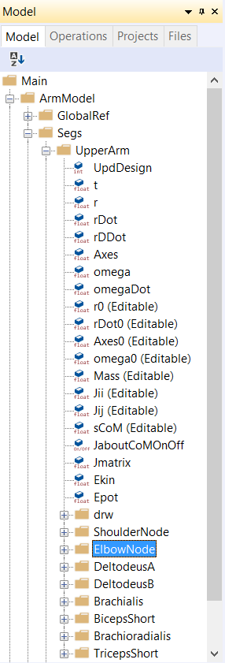

Lesson 2: Defining Segments and Displaying Objects¶
Here’s an AnyScript file to start on if you have not completed the
previous lesson:
*demo.lesson2.any*
The building blocks of any mechanical system are called segments. They are the rigid elements that represent your model. When modeling a human, they usually correspond to the bones of the body. However, they can also be used to model machines, exoskeletons and other non-human model components. Hence the more general term “segment” [1].
A segment is just a coordinate system that can move around in space and change its orientation. It has an origin where its center of mass is assumed to be located, and it has axes coinciding with its principal inertia axes.
Creating a segment¶
We shall start by defining a folder for the segments. Please add the following text to your model (new text marked by red):
// The actual body model goes in this folder
AnyFolder ArmModel = {
// Global Reference Frame
AnyFixedRefFrame GlobalRef = {
// Todo: Add points for grounding
// of the model here
}; // Global reference frame
// Segments
AnyFolder Segs = {
}; // Segs folder
}; // ArmModel
Try loading the model by clicking the  icon or the F7 key. If you expand the ArmModel branch in the tree view, you should see a new, empty folder named Segs. We are now ready to add a segment to the model, and this would probably be a good time to introduce you to the Class Inserter.
{kind=link}

You will find a tab called Classes on the right edge of your AnyBody interface. Clicking on the tab shows a Class List which contains all the predefined classes in AnyScript.
To insert a segment start by placing your text cursor inside the newly defined AnyFolder Segs. Then find the class AnySeg in the Class List and double-click it to insert its template into your text editor.
You should get this:
// Segments
AnyFolder Segs = {
AnySeg <ObjectName> =
{
//r0 = {0, 0, 0};
//rDot0 = {0, 0, 0};
//Axes0 = {{1, 0, 0}, {0, 1, 0}, {0, 0, 1}};
//omega0 = {0, 0, 0};
Mass = 0;
Jii = {0, 0, 0};
//Jij = {0, 0, 0};
//sCoM = {0, 0, 0};
};
}; // Segs folder
This AnySeg class template contains all possible properties that you may want to set. Properties that are active are mandatory to provide (the template contains some default values), while the commented ones are optional. You can delete any unnecessary optinal properties. For AnySeg, Mass and Jii are mandatory properties. The former is the mass of the segment object while the latter is the diagonal elements of its inertia tensor.
Let us give the new segment the name UpperArm and set its Mass = 2 and also assign reasonable values for Jii:
AnySeg UpperArm = {
//r0 = {0, 0, 0};
//Axes0 = {{1, 0, 0}, {0, 1, 0}, {0, 0, 1}};
Mass = 2;
Jii = {0.001, 0.01, 0.01};
}; //UpperArm
Load the model again and notice the warning you get Among the messages:
Model Warning: Study ‘Main.ArmStudy’ contains too few kinematic constraints to be kinematically determinate.
This tells you that your model has more degrees of freedom than constraints. We will take care of this in the next lesson
Displaying a segment¶
Now that we have a physical object in the model let’s see what it looks like. To make something visible in AnyBody, you have to add a drawing object which defines visibility:
AnySeg UpperArm = {
//r0 = {0, 0, 0};
//Axes0 = {{1, 0, 0}, {0, 1, 0}, {0, 0, 1}};
Mass = 2;
Jii = {0.001, 0.01, 0.01};
AnyDrawSeg drw = {};
}; // UpperArm
Reload the model, and look at the Model View (you might have to press
the  zoom all button to locate your segment) . If you
entered the inertia properties in the Jii specification as written
above, then your ellipsoid should be ten times as long as it is wide.
Try changing the “0.001” to “0.01” and reload. The ellipsoid becomes
spherical. The dimensions of the ellipsoid are scaled this way to fit
the mass properties of the segment you are defining. Now change Jii back
to {0.001,0.01,0.01} again.
zoom all button to locate your segment) . If you
entered the inertia properties in the Jii specification as written
above, then your ellipsoid should be ten times as long as it is wide.
Try changing the “0.001” to “0.01” and reload. The ellipsoid becomes
spherical. The dimensions of the ellipsoid are scaled this way to fit
the mass properties of the segment you are defining. Now change Jii back
to {0.001,0.01,0.01} again.
Adding point nodes to a segment¶
We will eventually attach things like muscles, joints, forces etc. to our segments. We hence need attachment points. They are defined in the local coordinate system of the segment. Figuring out these points for complex, realistic models can be a laborious task, but you can often grab the point locations based on existing reference points defined in most AMMR models.
For this model, let us assume that you know the coordinates of all the points on UpperArm. Instead of going through the drill with the object inserter, you can copy and paste the following lines:
AnySeg UpperArm = {
//r0 = {0, 0, 0};
//Axes0 = {{1, 0, 0}, {0, 1, 0}, {0, 0, 1}};
Mass = 2;
Jii = {0.001, 0.01, 0.01};
AnyDrawSeg drw = {};
AnyRefNode ShoulderNode = {
sRel = {-0.2,0,0};
};
AnyRefNode ElbowNode = {
sRel = {0.2,0,0};
};
AnyRefNode DeltodeusA = {
sRel = {-0.1,0,0.02};
};
AnyRefNode DeltodeusB = {
sRel = {-0.1,0,-0.02};
};
AnyRefNode Brachialis = {
sRel = {0.1,0,0.01};
};
AnyRefNode BicepsShort = {
sRel = {-0.1,0,0.03};
};
AnyRefNode Brachioradialis = {
sRel = {0.05,0,0.02};
};
AnyRefNode TricepsShort = {
sRel = {-0.1,0,-0.01};
};
}; // UpperArm

Try loading the model again and have a look at the graphical representation. If you zoom out enough, you should see your points floating around the ellipsoid connected to its center of gravity by yellow pins.
One segment does not make much of a mechanism, so let’s define a forearm as well. In the segs folder, add these lines:
AnySeg ForeArm = {
Mass = 2.0;
Jii = {0.001,0.01,0.01};
AnyRefNode ElbowNode = {
sRel = {-0.2,0,0};
};
AnyRefNode HandNode = {
sRel = {0.2,0,0};
};
AnyRefNode Brachialis = {
sRel = {-0.1,0,0.02};
};
AnyRefNode Brachioradialis = {
sRel = {0.0,0,0.02};
};
AnyRefNode Biceps = {
sRel = {-0.15,0,0.01};
};
AnyRefNode Triceps = {
sRel = {-0.25,0,-0.05};
};
AnyDrawSeg DrwSeg = {};
}; // ForeArm
}; // Segs folder
Creating a second segment¶
When you reload the model, you may not see the forearm immediately because it looks exactly the same (Similar mass properties and point locations) and is placed exactly on top of the upper arm.
Let us change the initial/load time position of the two segments so we can see both. The properties for this is r0 and Axes0 for location and rotation.
Remember that this is only the initial position before running any analysis. When you run your model, it will ignore the initial positions and obey any constraints you specify. A joint is a constraint that constrains the movement between segments. More on this in the next Lesson.
For now, let us change the position and rotation of the segments at load time.
AnySeg UpperArm = {
r0 = {0, 0.3, 0};
//Axes0 = {{1, 0, 0}, {0, 1, 0}, {0, 0, 1}};
Mass = 2;
Jii = {0.001, 0.01, 0.01};
AnyDrawSeg drw = {};
and
AnySeg ForeArm = {
r0 = {0.3, 0, 0};
Mass = 2.0;
Jii = {0.001,0.01,0.01};
This will clearly separate the segments in your Model View:

So far so good. But it might improve the visual impression if the were also oriented a bit like we would expect an arm to be. This involves the Axes0 property, which is really a rotation matrix. Such matrices are a bit difficult to cook up on the fly. The predefined version in the UpperArm segment looks like this:
AnySeg UpperArm = {
r0 = {0, 0.3, 0};
Axes0 = {{1, 0, 0}, {0, 1, 0}, {0, 0, 1}};
Rotation matrices in AnyBody¶
If your spatial thinking is good, you can start figuring out unit vectors for the coordinate system orientation you want and insert them into the Axes0 specification instead of the existing ones.
Note
Note that matrices in AnyBody are arranged row-wise, so {1, 0, 0} in Axes0 is the first row of a 3x3 matrix.
There is an easier solution for generating the rotation matrix: AnyScript has a standard function named RotMat, which returns a rotation matrix corresponding to a given axis and rotation angle. Therefore, we can specify:
AnySeg UpperArm = {
r0 = {0, 0.3, 0};
Axes0 = RotMat(-90*pi/180, z);
When you reload again, you will see that the UpperArm is indeed rotated -90 degrees about the z axis as the function arguments indicate. Notice the multiplication of the angle by pi/180. AnyBody identifies the word “pi” as 3.14159… and dividing this with 180 gives the conversion factor between degrees and radians.
Note
Angles in AnyBody are always in radians.
In the next section, we will look at how joints can be used to constrain the movement of segments and allow them to articulate the way we desire.
See also
Next lesson: So if you are up to it, let’s continue onward to Lesson 3: Connecting segments by joints.
Footnotes
| [1] | In rigid body dynamics terminology, a “segment” would be called a “rigid body”, but to avoid unnecessary confusion between the rigid bodies and the total body model, we have chosen to use “segments” for the rigid parts of the model. |